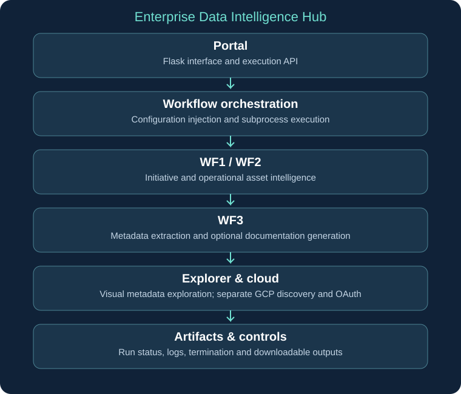

← PortfolioEnterprise Data Intelligence Hub
Proof of concept in development
Interactive conceptual walkthrough. No original code runs, no live systems are connected and no enterprise data is used.

Explore the stages
1. Portal
Flask interface and execution API
2. Workflow orchestration
Configuration injection and subprocess execution
3. WF1 / WF2
Initiative and operational asset intelligence
4. WF3
Metadata extraction and optional documentation generation
5. Explorer & cloud
Visual metadata exploration; separate GCP discovery and OAuth
6. Artifacts & controls
Run status, logs, termination and downloadable outputs
Illustrative metadata exploration
Fictional assets only. Select a workflow to see an example output.
Technical contributions
Solution architecture
Designed a consolidated metadata-driven BI engineering portal.Workflow integration
Integrated notebook engines with configuration-driven execution.Metadata engineering
Developed extraction, logical field resolution and documentation workflows.Visual exploration
Integrated metadata relationship exploration.Cloud integration
Integrated GCP metadata discovery and OAuth components.Execution management
Implemented status, logs, termination and artifact access.POC, not a production multi-user service. Authentication, CSRF protection, rate limits, concurrency isolation and upload controls require further work. Live-system accuracy, complete lineage and enterprise deployment are not independently verified. Confirm individual contribution and publication rights.
View GitHub case study